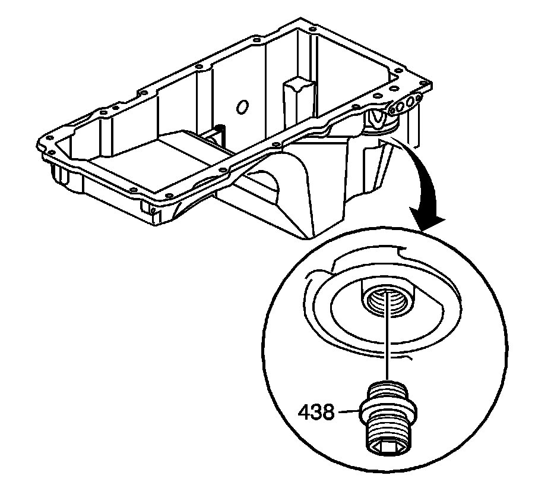
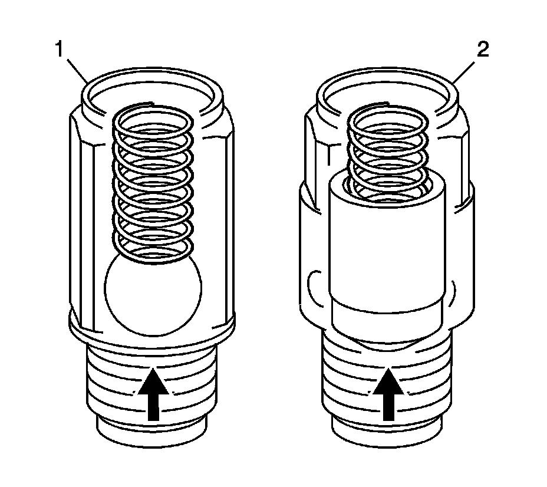
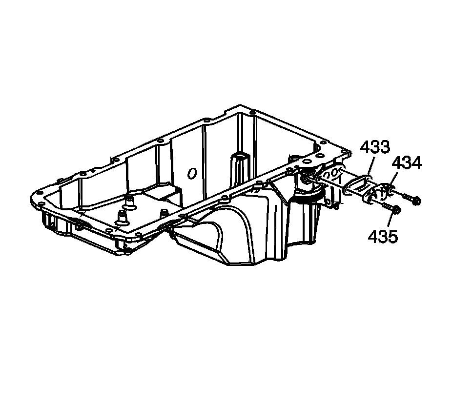

61. Oil Pan Cleaning and Inspection
Oil Pan Cleaning and Inspection

1. Remove the oil filter fitting (438), as required.
2. Remove the active fuel management oil pressure relief valve (455).

Important: First design valves (1) can be identified by a ball and spring design, an external hex the entire length of the valve body, and a captured washer. Second design valves (2) can be identified by a shorter external hex on the valve body, a valve and spring design, and no washer.
3. Inspect the first design oil pressure relief valve (1) for proper operation. Lightly depress the ball. The valve spring should seat the ball to the proper closed position.
4. Inspect the second design oil pressure relief valve (2) for proper operation. Lightly depress the valve. The valve spring should seat the valve to the proper closed position.
5. Remove the oil level sensor (727) and O-ring (728).
6. Remove the bolts (427) and baffle (428).

7. Remove the oil pan cover (434), bolts (435), and gasket (433).
8. Clean the oil pan in solvent.
Caution: Refer to Safety Glasses and Compressed Air Caution.
9. Dry the oil pan with compressed air.
10. Inspect the oil pan for the following conditions:
^ Damaged gasket surfaces (1)
^ Restrictions within the oil passages (2) of the pan
^ Damaged oil filter seal surface (3)
^ Threaded oil level sensor hole (4) for damage